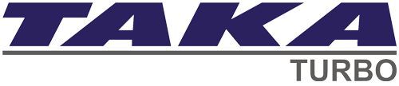
Turbomachinery service
Company Profile
PT Taka Hydrocore Indonesia integrates offshore, nearshore, onshore, laboratory, and vessel-based capability for subsurface survey and engineering support.
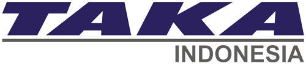
About Us
Taka Group was founded in 1998, starting with Taka Turbomachinery Indonesia. The group has grown into four subsidiary companies and one sister company with different service focus and capabilities.
THI supports offshore and onshore geophysical and geotechnical survey work, strengthened by soil laboratory, engineering service, vessel operation, and related technical service capability.
Taka Group connects four operating companies and one sister company across machinery, precision, survey execution, laboratory, and vessel management capability.

Turbomachinery service
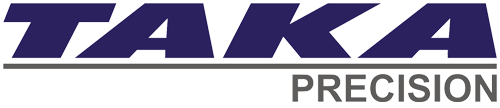
Rotating equipment service & turbomachinery parts manufacture
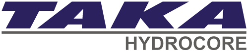
Offshore/onshore geophysical & geotechnical survey
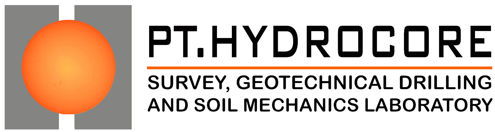
Soil laboratory & engineering service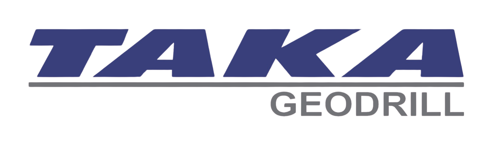
Ship owner, vessel operator & management
Taka Hydrocore Indonesia
Established in 2010, THI supports geophysical, geotechnical, hydrogeological, environmental, and water-well drilling scopes for energy, mining, infrastructure, contractor, and consulting clients.
Deliver better services by improving key resources and field performance.
Maintain a safe, healthy, and productive working environment.
Comply with relevant regulations, standards, and project requirements.
Create consistent value for clients, people, partners, and stakeholders.
CIVD and SKUP credentials support THI's oil and gas exploration consulting and contractor capability.
Our Corporate Culture
Doing a great job every time and everywhere.
The confidence to do the right thing and make the right decision.
Consistently maximize competence for better results.
Respect, trust, and care for each other and the community.
Professional delivery of work and service.
Offshore, Nearshore & Onshore
THI combines marine geophysical acquisition, offshore geotechnical drilling, seabed investigation, nearshore platforms, land-based crews, and technical reporting into practical survey scopes.
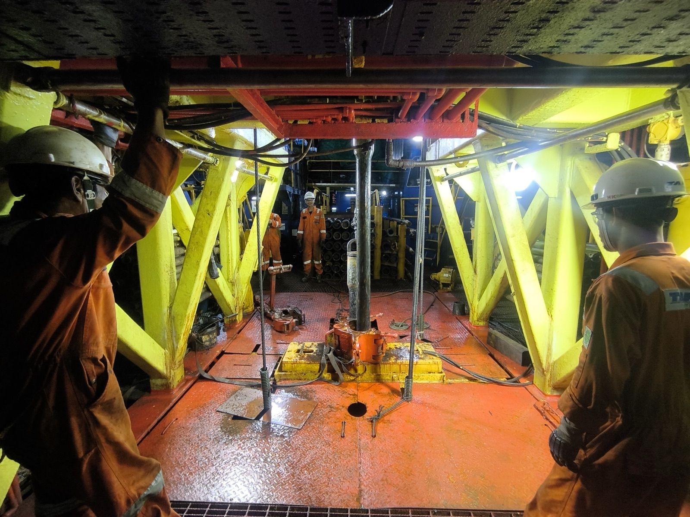
High-resolution seismic, geophysical acquisition, drilling, CPT, sampling, and seabed investigation support.
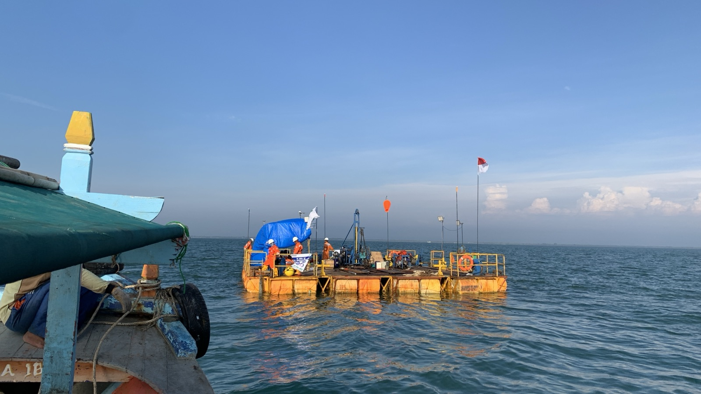
Nearshore platforms for coastal, jetty, reclamation, and infrastructure preparation works.
.jpeg)
Ground investigation, environmental field activity, and project site preparation support.
Project support
Before mobilization, THI reviews the water depth, soil target, site access, equipment spread, crew requirement, and reporting format. From there, the team connects the right survey method with a field plan that is realistic to execute and clear for the client to follow.
MarineDownhole investigation, seabed work, and geophysical acquisition for offshore decisions.
NearshoreShallow-water investigation arranged around access, draft, tides, and working platform needs.
OnshoreLand-based geotechnical and environmental field work prepared around ground condition and site logistics.
SupportEquipment readiness, field crew, data handling, and reporting workflow tied into one execution plan.
Extensive Experience
Assets & Equipment
Vessels, nearshore platforms, drilling systems, geophysical equipment, and field crews are prepared around the site condition and technical requirement of each project.
Indonesian flag platforms supporting marine geophysical, offshore geotechnical, and nearshore survey scopes.
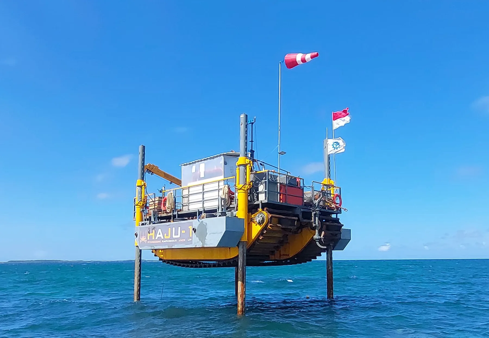
Platforms suited for nearshore, inshore, environmental, and infrastructure preparation study requirements.

2D HR seismic equipment, data recording, seismic source, and processing support.
View seismic service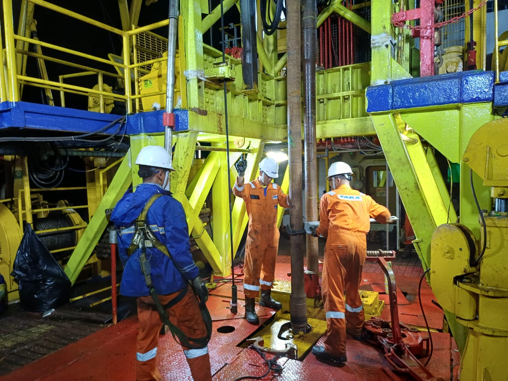
Drill rig TH-25M, seabed frame, sampler, CPTu, logging, and positioning support.
View drill rig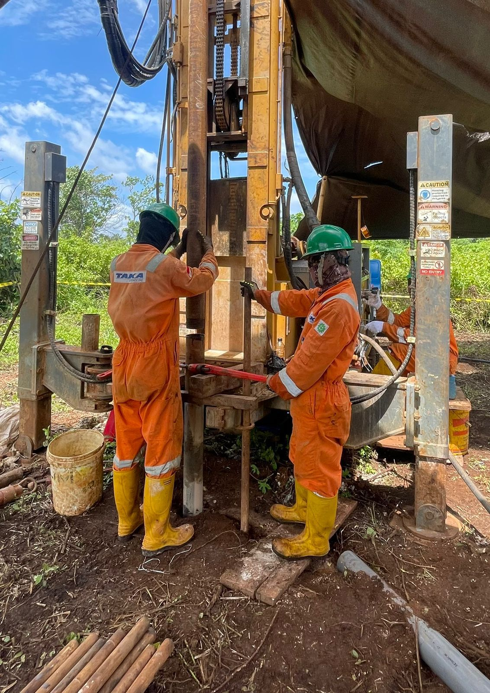
Land-based drilling and survey support for infrastructure and industrial project preparation.
View onshore serviceLaboratory
Soil testing and documentationThe soil and geotechnical laboratory capability is presented in collaboration with PT Hydrocore. It supports sample handling, basic and advanced soil testing, rock testing, controlled storage, and ISO/IEC 17025 accredited laboratory workflow.
The most advanced and complete soil laboratory, ISO/IEC 17025 accredited.

 for Organic Content.png)


Some of Our Value Customers
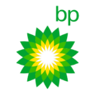
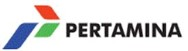
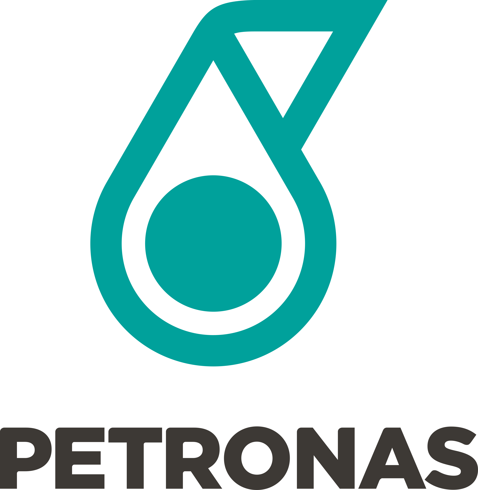
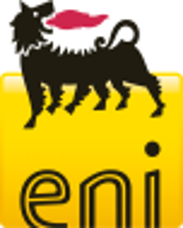
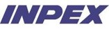
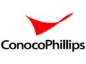
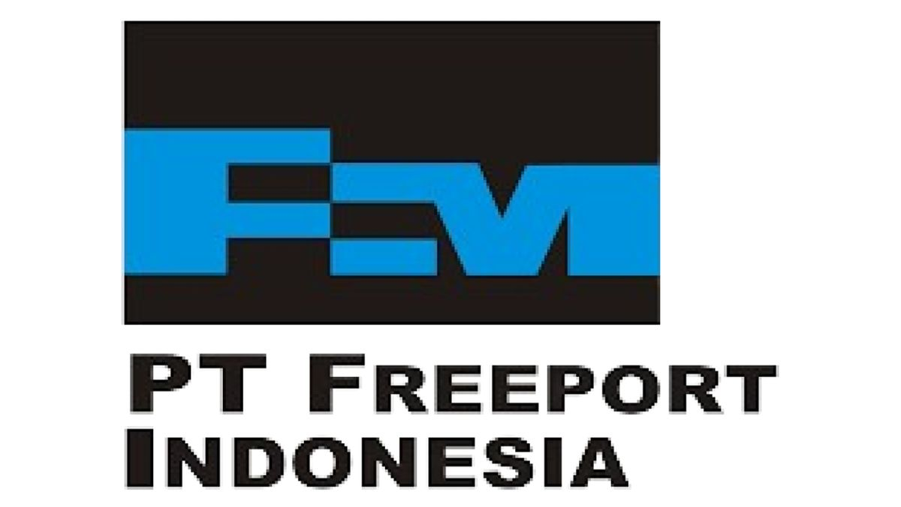

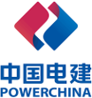
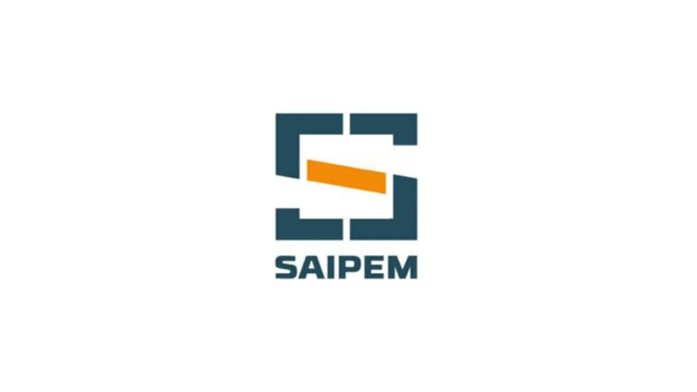
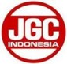
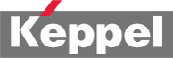
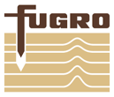
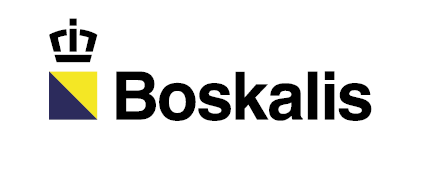
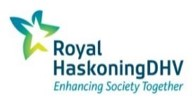
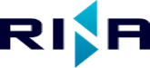
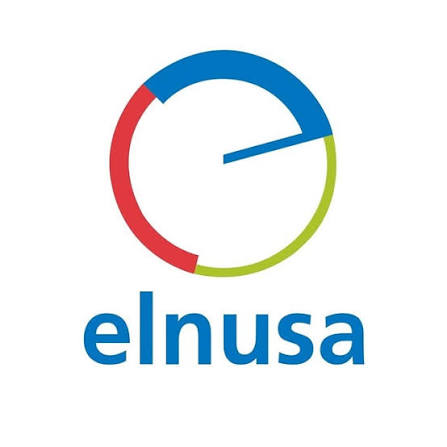
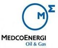
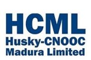
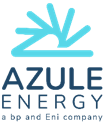
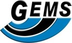
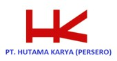
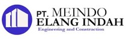
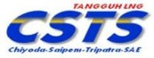
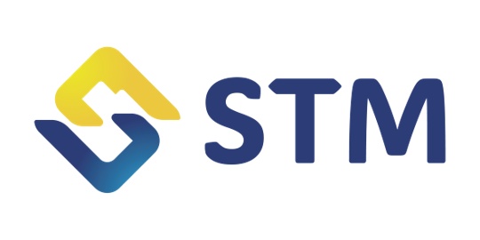
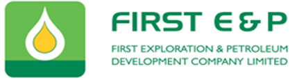
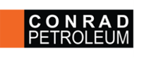

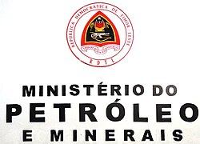